Prototype built using Adobe Experience Design
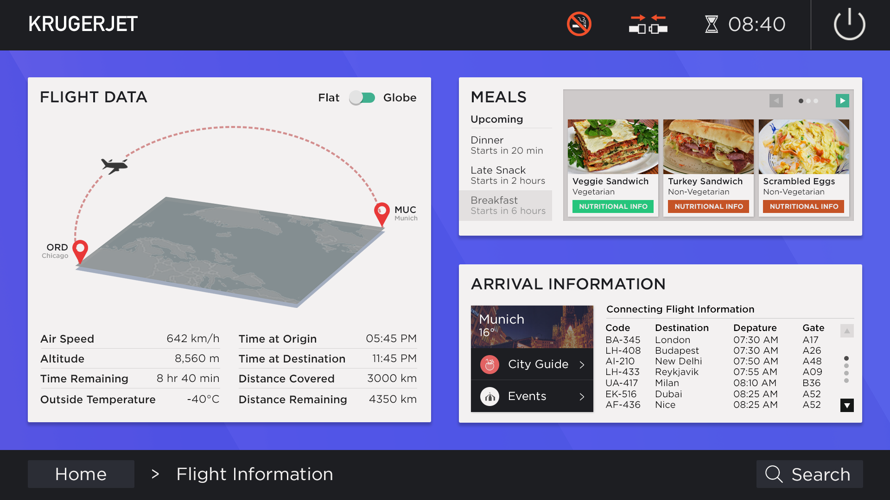
Contents
- Introduction [+]
- Observations and Common Design Limitations [+]
- Addressing limitations using Low-Fidelity Prototypes [+]
- User Testing and Feedback [+]
- Incorporating Feedback: High-Fidelity Prototypes [+]
- Appendix [+]
Introduction
Inflight entertainment is an integral part of the travel experience on long haul flights, for passengers of all ages, which presents a critical requirement for the system to be designed while prioritizing the needs of users. If the interface is clunky or difficult to navigate, a user might get frustrated and choose the lucrative option of sleeping instead, which doesn't do justice to both the installation cost (around $3 million per plane) and extra fuel required due to the weight of these screens. In addition, this project also explores how the in flight experience might embrace emerging services and integrate with personal devices.
This project aims to understand some of the shortcomings across inflight entertainment systems from different airlines, and address these shortcomings, with consideration to the constraints and limitations on a system that operates on an airplane. I do acknowledge that my user research is limited to my observations and to semi-structured interviews conducted with friends, and designs of some airlines' inflight entertainment system may address some of the issues I present.
Observations and Common Design Limitations
- Resistive Touchscreen
The resistive touchscreen, though a hardware issue, has severe implications on the IFE system's interface. The resistive screen is less responsive to lighter touches than, for example capacitive screens, which make scrolling and other interactions such as a pinch-to-zoom seem unintuitive and disjoint. On my flight in January from Amsterdam to Chicago, I observed a user seated next to my try to use the flight path screen, where the only option to interact with the screen was dragging across or pinching the globe on the screen. The user under my inconspicuous ethnography struggled to move the globe to her desired level of zoom due to the resistive screen's lack of response to the pinch gesture, and eventually gave up. - The Flight Information Screen
The flight information screen comes under my scrutiny because it rarely contains information that the user truly cares about. The process of human-centered design is all about developing a deep empathy for the user, which is why displaying information about when the next meal is going to be served, or information about the user's next flight is definitely more useful. - Integration with devices and services
With the advent of inflight WiFi, there is scope for greater levels of interaction between personal devices, which the current generation of inflight entertainment systems overlook.
Furthermore, many IFE systems remain incapable of multi-tasking with core services. For instance, with the Delta IFE system, it is impossible to play games while listening to music. - Searching for content
Far too many IFE systems lack the simple option of searching for content. If I have a particular movie or music album in mind, I should be able to find it without having to navigate around a vast library grouped by alphabet sets. From my user research, only British Airways and the new Delta IFE system provided search options on high-level screens such as the home screen. - Screen Locking
Another big design problem I found on my KLM flight was that the remote was stowed inside the armrest. While sleeping, I accidentally pressed a button on the remote while moving in my seat that caused the overhead light to turn on, which infuriated the passengers sitting next to me. Even when watching movies, there is no way to lock the remote to prevent unintentional button presses. The remote is often moved to a spot below the screen, but for the scope of this project, all limitations will be addressed through changes in the interface.
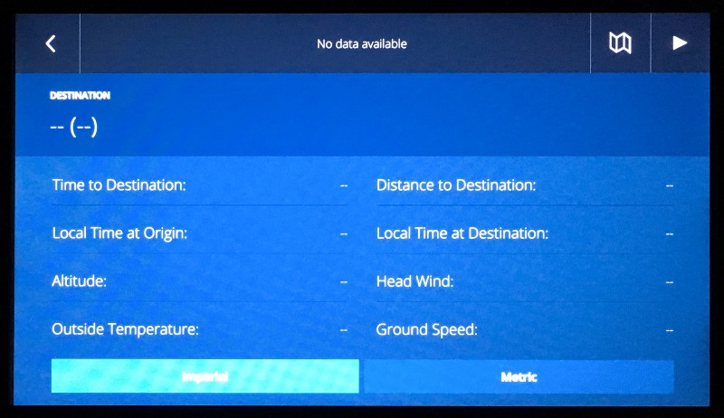
Delta's flight information screen just shows technical information and nothing about meals or arrival
(Source: https://medium.com/@erolahmed/the-new-delta-in-flight-entertainment-ui-6a91457d2663)
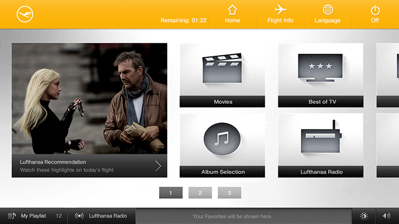
Lufthansa's inflight entertainment fails to provide users with a high-level option to search for content
(Source: http://www.s-v.de/detail-image.php?id=744)
Addressing limitations using Low-Fidelity Prototypes
- General Features
- The interface includes a status bar at the top, where the time remaining for the flight, seat-belt and no-smoking signs are displayed.
- There's also a multipurpose navigation bar at the bottom, which has a search button that allows searching for content on the IFE system from any screen.
- The navigation bar also includes an indication of what screen the user is on, which allows the user to easily track back towards the home screen.
- To enable services such as movies and music to continue in the background, and remain accessible, they will show up as a tile in the bottom navigation and can be tapped to resume the the service in question.
- The interface actively prevents scrolling using only a tracker, and mandates the usage of buttons instead or along with the tracker, with the assumption that it is being used on a resistive touch screen which cannot detect lighter touches
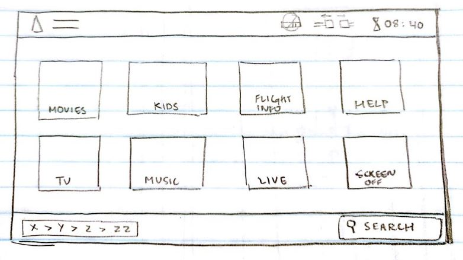
- Home Screen
- Includes a simple, tiled layout for all core services in the system such as movies, TV shows and music.
- There is a tile to request assistance from a crew member. The user is added to a queue, and if the request is simple, such as a request for a glass of water, it can be communicated using just the IFE system.
- In addition, there's also a tile to turn the display off, if the screen is not being used.
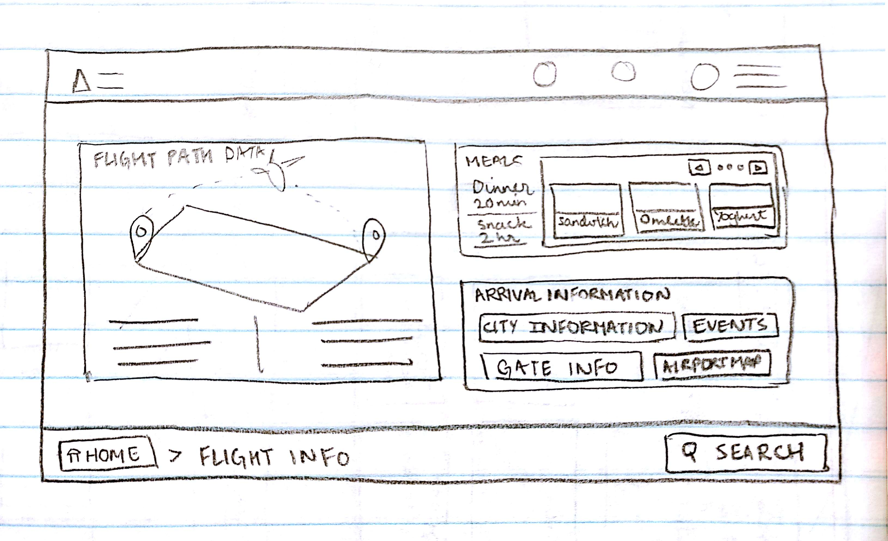
- Flight Information Screen
- In addition to the technical information that conventional IFE systems provide in this option, this sketch includes information on when the next meal arrives and what the user can expect when he/she arrives at their destination.
- The flight path is displayed on a flat board, which doesn't require the user to zoom in or zoom out, and maps out a trajectory of the flight.
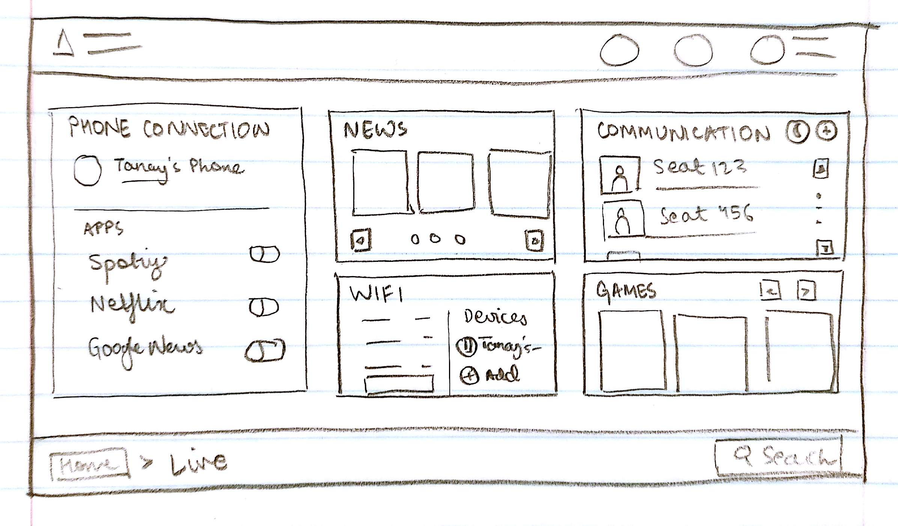
- Live Screen
- This screen contains options for connectivity and integration with personal devices.
- The phone connection card includes options to synchronise applications such as Spotify, Netflix with services in the IFE system so users can access their music or movie libraries through the system.
- The news tile provides news based on interests determined from synchronised news applications on devices.
- There's also an option to manage data usage, upgrade to a new inflight WiFi plan, and manage user devices connected to the inflight WiFi.
- Also includes options for sending text messages and calling in the event that users travelling together do not get seats next to each other and would want to speak. The call however would require earphones.
- Also includes a game library.
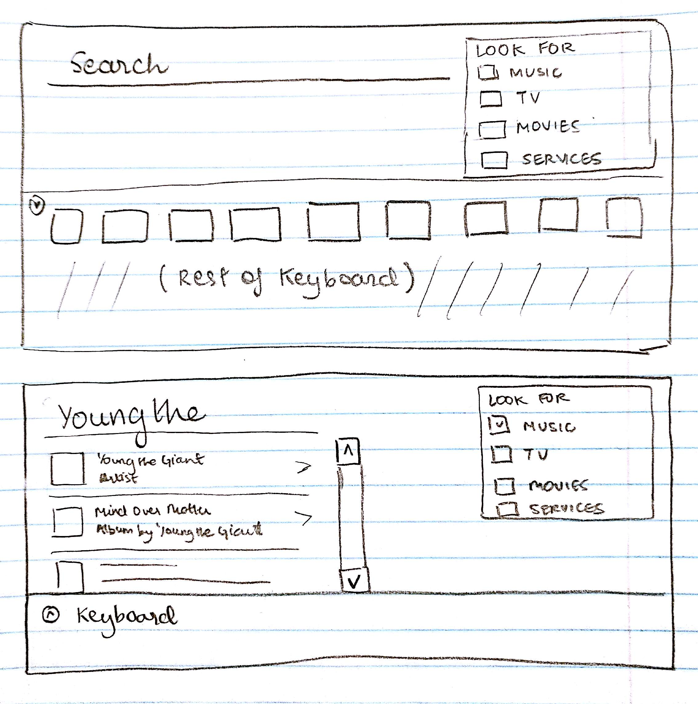
- Search
- The search screen provides an on-screen keyboard to type in a query.
- Also includes a panel to filter search results based on content type.
- Keyboard automatically collapses to display more search results.
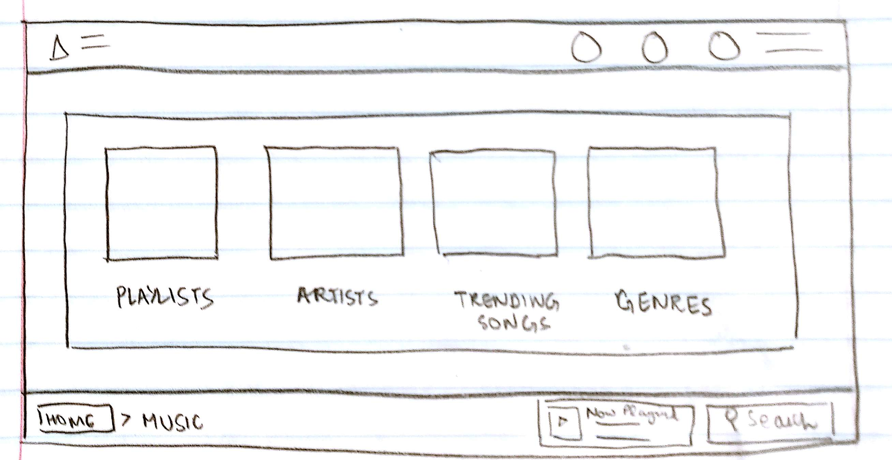
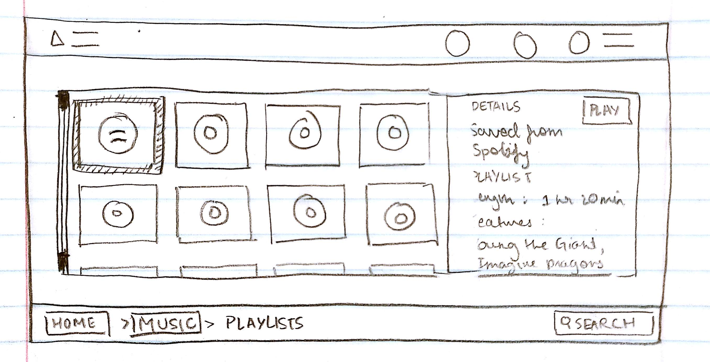
- Music and Content
- This set of screens demonstrates how entertainment content such as music, TV shows and movies will be organized.
- The main screen will include simplified options to look for content, which will lead into a two-column view with a grid and details column
User Testing and Feedback
- Audience
Since the target audience for an inflight entertainment system is travellers on long-haul flights, I decided to choose international students as the main userbase to gather feedback from and test my low-fidelity prototypes on. It can be estimated than an international student from Asia makes at least 4 long-haul flights in a year, so I took my prototypes to the Illini Union, a building where many students meet to study or take part in recreational activities. - Key Takeaways
- Potential users considered the home screen to be an oversimplification, and wanted to see options such as Games and Shopping Catalogues on the home screen. Therefore, I decided to give the option to have multiple sets of tiles for the home screen, which can be navigated across using arrows.
- I also observed that once the user completed a task such as checking gate information, or playing a playlist, they sought to turn the screen off, and this could only be done by navigation all the way back to the home screen. Thus, I decided to reposition the power button to the status bar on top, so that the screen can be powered off from all screens.
- Users were receptive to the idea of having an option to synchronize their mobile phone with the system, as conserving battery is often a priority on long-haul flights, so not listening to music or watching movies on the device can be a boon.
- Users didn't have the option to discard a search and go back to whatever screen they tapped the search button, and this was because I accidentally omitted that in my prototype!
- There was no clear consensus about what kind of information users consider most valuable, but meal timings/contents somewhat emerged as the most wanted option, which reaffirms the importance of including them in the Flight Information screen.
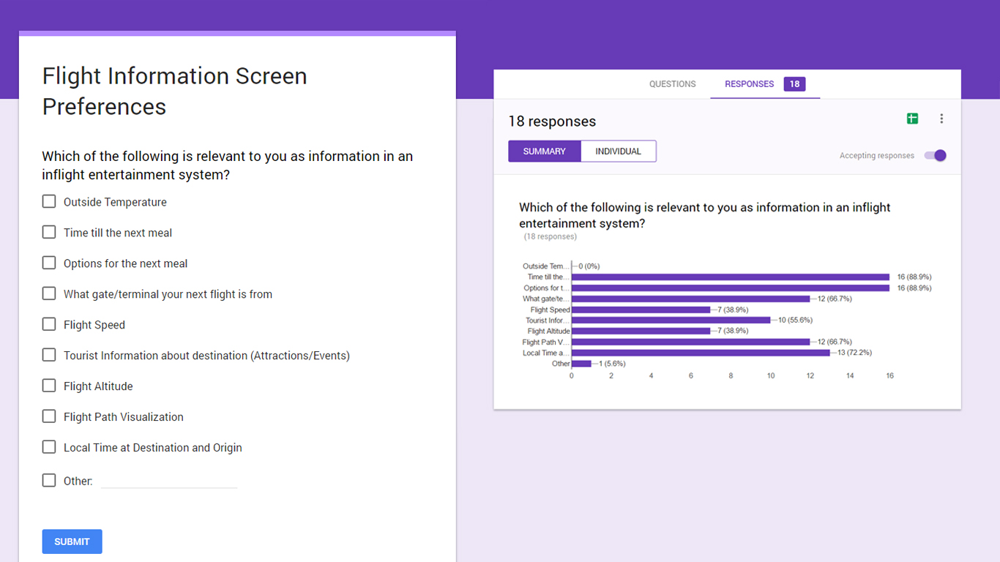
Incorporating Feedback: High-Fidelity Prototypes
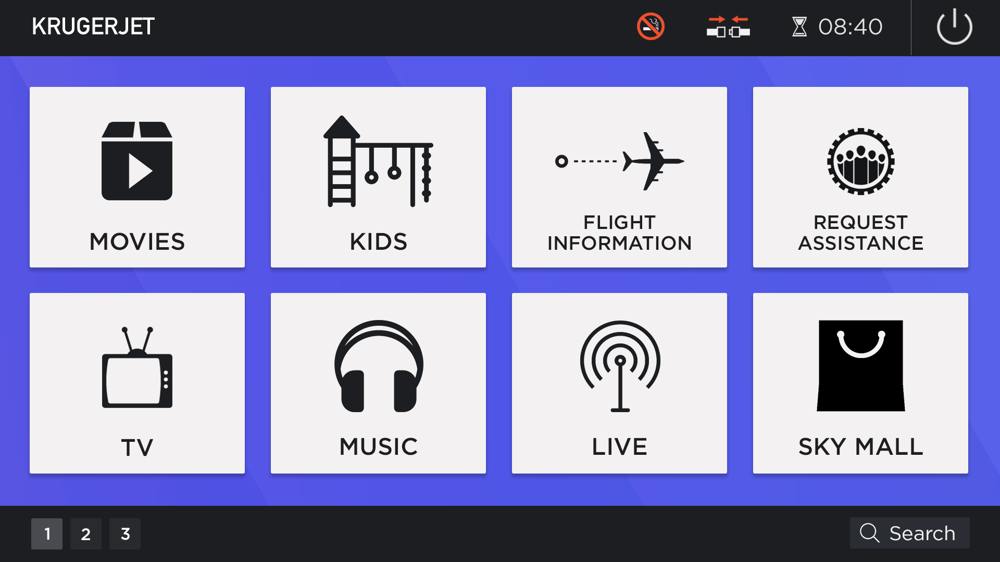
The Home Screen
Flight Information Screen
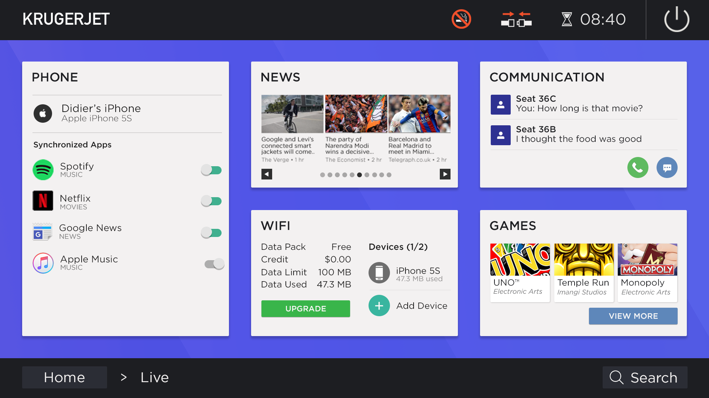
The Live Screen
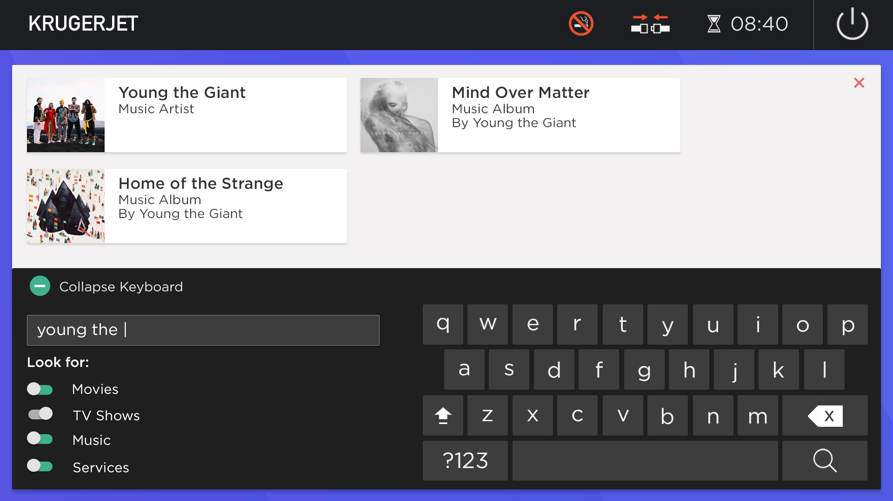
The Search Screen
Appendix
Icon Attributions (All licensed under Creative Commons 3.0)
- Video Distribution Package by Jack Zwanenburg from the Noun Project
- Television by Hopkins from the Noun Project
- connection by Souvik Bhattacharjee from the Noun Project
- Airplane by Yair Cohen from the Noun Project
- Headphones by Anastasia Latysheva from the Noun Project
- teamwork by Kelig Le Luron from the Noun Project
- Airplane by Patricia from the Noun Project
- hourglass by ProSymbols from the Noun Project
- Map by gira Park from the Noun Project
- No Smoking by Gan Khoon Lay from the Noun Project
- Shopping Bag by Di Sang from the Noun Project